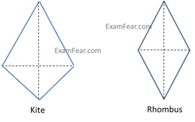
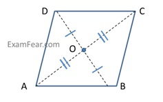
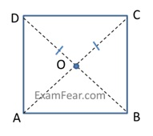
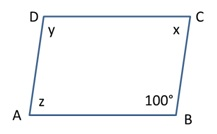
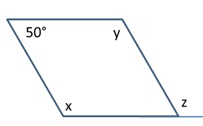
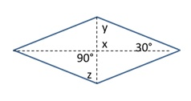
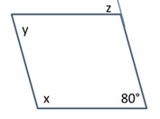
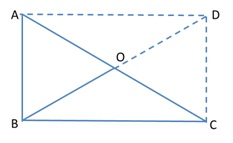

Types of Parallelograms
There are various types of parallelograms which are listed below:


|
ΔAOD ≈ΔCOD (SAS congruency criterion) m∠AOD = m∠COD ∠AOD and∠COD are linear pairs so, m∠AOD = m∠COD = 90° |
|
ΔABC ≈ΔABD (SAS congruency criterion) AB = AB and AD = BC m∠A = m∠B = 90° Hence AC = BD |

|
ΔAOD ≈ΔCOD (SSS congruency criterion) m∠AOD = m∠COD ∠AOD and∠COD are linear pairs so, m∠AOD = m∠COD = 90°
|
Problem: Find the measure of x, y, z

∠B + ∠C = 180° (Adjacent angles in a parallelogram are supplementary)
100° + x = 180°
x = 80°
z = x = 80° (opposite angles of a parallelogram are equal)
y = 100° (opposite angles of a parallelogram are equal)

x + 50° = 180° (Adjacent angles in a parallelogram are supplementary)
x = 130°
z = x = 130° (corresponding angles)

z = 80° (corresponding angles)
x + 80° = 180° (Adjacent angles in a parallelogram are supplementary)
x = 100°
y = 80° (opposite angles of a parallelogram are equal)

y = 112° (opposite angles of a parallelogram are equal)
y + x + 40° = 180° (Angle sum property)
x = 28°
z = 28° (Alternate angles)

x = 90° (vertically opposite angles)
y + x + 30° = 180° (Angle sum property)
y + 90° + 30° = 180°
y = 60°
z = 60° (Alternate angles)
Problem: ABC is a right-angled triangle and O is the mid-point of the side opposite to the right angle. Explain why O is equidistant from A, B and C.

Since, two right triangles make a rectangle where O is equidistant point from A, B, C and D because O is the mid-point of the two diagonals of a rectangle.
Since AC and BD are equal diagonals and intersect at mid-point.
So, O is the equidistant from A, B, C and D.